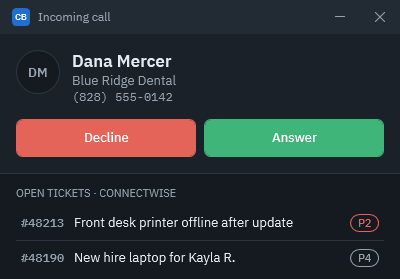
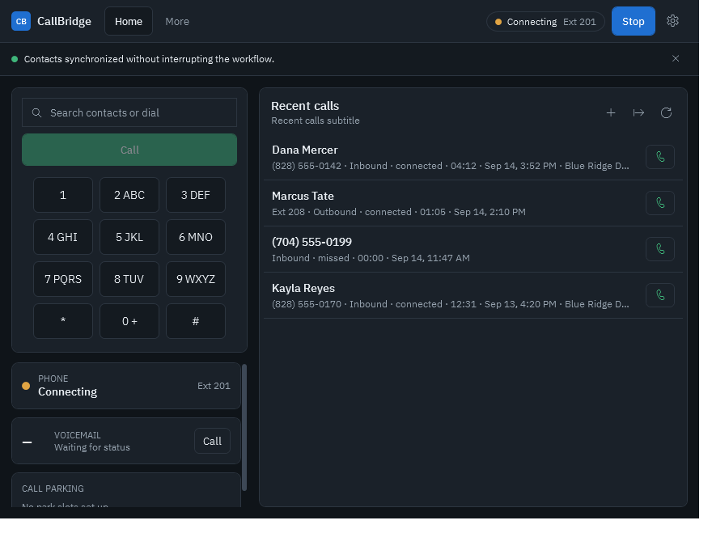

Screen pop
Incoming calls show the contact, company, and up to five open tickets, with one-click Answer and Decline.
CallBridge for Windows
CallBridge is a desktop softphone built for MSP technicians. When a customer calls, it shows their company and open ConnectWise tickets, lets you take notes straight onto a ticket, and drafts your time entry when you hang up.
Incoming calls show the contact, company, and up to five open tickets, with one-click Answer and Decline.
Type while you talk. Notes save to the ticket you pick as an internal note, even if you forget to press Save.
When a call ends, CallBridge drafts the time entry. You check the minutes, then save it.
See new voicemail at a glance, and park or pick up calls without memorizing star codes.


Quick start
Your admin does steps 2 to 4 once per computer. Technicians only need step 5 and a headset.
Every field, where to find the values in HivePBX and ConnectWise, and what to expect when it works.